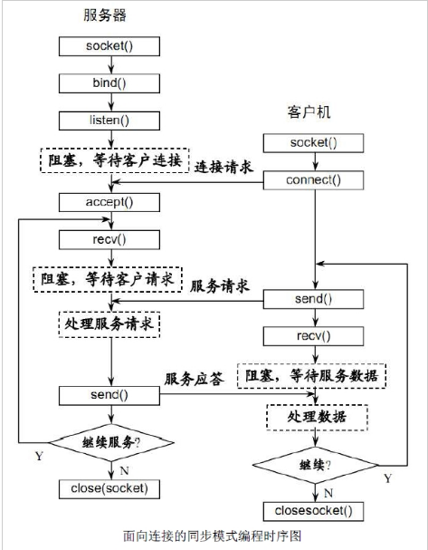

老雷socket编程之PHP利用socket扩展实现聊天服务
socket聊天服务原理

PHP有两个socket的扩展 sockets和streams
sockets
socket_create(AF_INET, SOCK_STREAM, SOL_TCP)
socket_write
socket_read
socket_close
客户端
socket_connect($socket, $address, $service_port)；
服务端
socket_bind($sock, $address, $port)
socket_listen($sock)
socket_accept
Streams
客户端
stream_socket_client
fwrite
fread
fclose($fp);
服务端
stream_socket_server
stream_set_blocking
stream_select
stream_socket_accept conn
stream_socket_recvfrom
stream_socket_sendto
stream_socket_shutdown
课后练习
使用sockets和streams扩展实现客户端跟服务端的功能。
服务端代码 客服端可使用udp&tcp测试工具
<?php
class SocketService
{
public $host="tcp://0.0.0.0:8000";
private $address;
private $port;
private $_sockets;
public $clients;
public $maxid=1000;
public function __construct($address = '', $port='')
{
if(!empty($address)){
$this->address = $address;
}
if(!empty($port)) {
$this->port = $port;
}
}
public function onConnect($client_id){
echo "Client client_id:{$client_id} \n";
}
public function onMessage($client_id,$msg){
//发给所有的
foreach($this->clients as $kk=>$cc){
if($kk>0){
$this->send($cc, $msg);
}
}
}
public function onClose($client_id){
echo "$client_id close \n";
}
public function service(){
//获取tcp协议号码。
$tcp = getprotobyname("tcp");
$sock = stream_socket_server($this->host, $errno, $errstr);;
if(!$sock)
{
throw new Exception("failed to create socket: ".socket_strerror($sock)."\n");
}
stream_set_blocking($sock,0);
$this->_sockets = $sock;
echo "listen on $this->address $this->host ... \n";
}
public function run(){
$this->service();
$this->clients[] = $this->_sockets;
while (true){
$changes = $this->clients;
//$write = NULL;
//$except = NULL;
stream_select($changes, $write, $except, NULL);
foreach ($changes as $key => $_sock){
if($this->_sockets == $_sock){ //判断是不是新接入的socket
if(($newClient = stream_socket_accept($_sock)) === false){
unset($this->clients[$key]);
continue;
}
$line = trim(stream_socket_recvfrom($newClient, 1024));
$this->maxid++;
$this->clients[$this->maxid] = $newClient;
$this->onConnect($this->maxid);
} else {
$msg=@stream_socket_recvfrom($_sock, 2048);
if(!$msg){
stream_socket_shutdown($this->clients[$key],STREAM_SHUT_RDWR);
unset($this->clients[$key]);
$this->onClose($key);
}else{
$msg=$this->decode($msg);
$this->onMessage($key,$msg);
}
}
}
}
}
/**
* 发送数据
* @param $newClinet 新接入的socket
* @param $msg 要发送的数据
* @return int|string
*/
public function send($newClinet, $msg){
$msg=$this->encode($msg);
if($msg){
stream_socket_sendto($newClinet, $msg);
}
}
public function encode($msg){
return $msg . "\n";
}
public function decode($msg){
return rtrim($msg, "\r\n");
}
/**
* 关闭socket
*/
public function close(){
return socket_close($this->_sockets);
}
}
$sock = new SocketService('127.0.0.1','9000');
$sock->run();